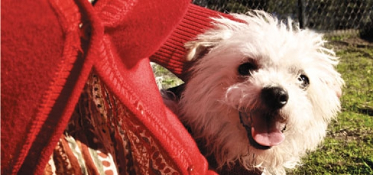
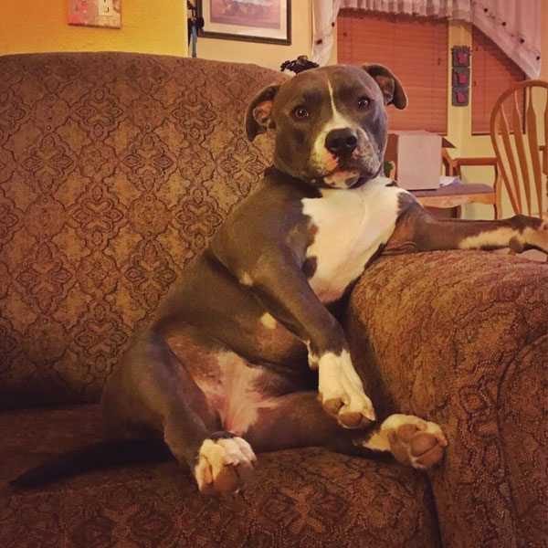

The Gender Divide
Why women want dogs, while men need them By Stanley Coren | Photograph by Mindy Lee
You’re in the parking lot of your favourite dog park, unloading your happy canine, when you notice a couple of other “regulars” arriving. There’s the burly leather-jacketed guy on the Harley with his Miniature Pinscher riding in the saddlebag. Oh, and now you’re getting a wave from the granny in Birkenstocks being towed by her grinning Pit Bull. Down at the river, you spot the blonde in full make-up and high heels, throwing a stick for her hairy Golden Retriever whose coat colour matches her hair exactly. One of the most popular mental entertainments that people engage in is asking themselves “Why did this particular person choose that particular dog?” In reality, it’s like asking why two people fell in love. Usually all that we end up with is the not very satisfying answer that there must have been some kind of shared psychological characteristics between the human and the canine which resulted in a mental “click” and triggered positive emotions. For the scientist, however, such an answer is not really adequate. For that reason, psychologists continue to look at the question of why specific people might be attracted to a dog with some explicit character traits and qualities. One thing has become clear from such research: just like in human bonding, there are differences between men and women in terms of what they are looking for in a partner. Psychologists have shown that women are usually looking for the “perfect mate” when they are considering men as potential partners. It appears that when choosing and bonding with dogs, women are similarly looking for the “perfect companion.” It is interesting that when describing their relationship to their dogs, women often compare it to their relationship with men—and men often come up on the short end of that assessment. In a national Newspoll survey taken in Australia that gathered data from more than 600 single men and women, a large percentage of the women noted that they preferred the companionship of their dog over that of human males because the dog came closer to their ideal housemate. Sixty percent of women say dogs are more affectionate than men, 70 percent say dogs are more easy-going than men, 63 percent say dogs are more loyal than men, and 58 percent say that dogs are more reliable. Furthermore, 40 percent of the women enjoyed the fact their dog allowed them to watch TV without interruption, 75 percent said they turned to their dog for affection when they felt down, and 80 percent said they valued the sense of security that dogs gave them. Men were not ruled out of women’s lives, however, 71 percent of the women surveyed said they would not enter a new relationship with anyone who didn’t like her having a dog. It has been suggested by some researchers that men are not looking for a perfect companion, but are rather looking for a friend and workmate who reflects their own values and personality. For example, Richard Alexander, an evolutionary biologist from the University of Michigan, suggests that men were first attracted to dogs because of shared values and behaviours. He notes, “Like wolves, dogs tend to live and work in groups, and so do we. It helps that both species hunt and kill prey and compete against rivals.” However some researchers suggest that rather than seeking a brother warrior and hunter, men are looking for something more subtle and softer when they seek the companionship of dogs. In a paper published in the journal American Behavioral Scientist, Alan Beck, a psychologist at Purdue University, and Aaron Katcher, a psychiatrist at the University of Pennsylvania, pointed out that cultures like ours have very few forms of play that allow caring and nurturing behaviours in male children. “Boy children,” says Beck, “tend to be very self-conscious about having to take care of younger brothers and sisters. They don’t play tea party or dollhouse, because that’s ‘Mommy stuff.’ However, taking care of an animal is a notable exception. Caring for your dog is always okay.” The acceptability of showing affection for dogs is not limited to a male’s childhood years. The view of dogs as “a license to love” continues into adulthood. Behavioural scientists have observed that in virtually every public setting, women are generally much more obviously “touchy-feely” than men are. When it comes to their relationship with dogs, however, this gender difference vanishes. “Men are just as likely as women to pet and stroke their dogs, hold them in their laps, kiss them, and so on,” says Beck. “It doesn’t matter whether they’re male or female dogs, either: men can hug them without inhibition, without feeling any less manly. It’s one of the very few areas in life where men feel truly comfortable as nurturers.” A canine companion also affects how men communicate and express their emotions, perhaps because they never interrupt or try to take over a conversation, or possibly because they never make negative or judgmental comments about what a person is saying. Dogs seem to encourage even the most taciturn of men to do what comes naturally to a lot of women—namely, to vent feelings verbally. “We did a study that showed 97 percent of people talk to their dogs,” says Beck, adding, “and the other 3 percent probably lied.” In some ways, dogs make better confidants than our girlfriends, relatives, and assorted other loved ones. Erika Friedman, a psychologist at the University of Pennsylvania, explains why dogs have this effect. “The exchange of affection between people and animals differs from exchanges with close family members and other relatives. These interpersonal relationships are frequently charged with ambivalence and negative emotional states. Human love and attention may be earned only with difficulty and sacrifice, or it may be entirely unavailable.” Since men generally have greater difficulty expressing emotion than women in our culture, dogs become even more valuable as intimate sounding boards for males. The comfort dogs give their owners can be obtained anytime the dog is near. Friedman adds that this comfort is available “in almost any quantity, without bargaining or supplication.” Dogs fulfill another function for men. If a man seeks companionship of the human sort, he may run into a number of obstacles. First, women often respond negatively if directly approached by a man that they do not know. The first response that women often have to male strangers (outside of controlled social settings) is suspicion or even fear. With his somewhat more limited social skills, the average male often does not know how to get around that problem. However, research shows that if a man is hoping to meet and attract a possible life partner, having a tail-wagging companion may improve his likelihood of success. For example, in a series of studies at the University of Pennsylvania, volunteers were asked to rate photographs of the same people shown with or without a dog. Those given the “with dog” scenes consistently rated the human in the photo as happier, safer, and more relaxed. The reviewers also reported wanting to be in those pictures much more often than they did the dogless ones. The animal behaviourist, Peter Messent, tested this social effect of dogs in real life. He asked volunteers to go on walks, either alone or with a dog. The idea was to count the number of social interactions each volunteer had on the walk. The results were that the man who walked alone tended to stay that way. Those men who were accompanied by a friendly dog had many more social encounters. In contemporary Japan, using dogs to meet people has become a commercial enterprise. Tokyo has more than a hundred “rent-a-puppy” shops which allow customers to take dogs on walks at a rate of about $15 per hour. Though many customers are simply seeking a pleasant dog experience in a city where dog ownership can be prohibitively expensive, more than a few male clients specifically ask for cute breeds to help them attract women. Evolutionary biologist Richard Alexander has tried to explain the positive effect a dog has by suggesting that, if anything, it’s a man’s apparent ability to form close and intimate bonds with a dog, not the dog itself, that women find attractive. “When a dog is showing trust in and companionship with a man, a woman knows that the man likely has whatever it takes to establish an affectionate relationship and keep it going,” says Alexander. This makes him closer to the average woman’s ideal of the “perfect partner” and thus makes him more interesting and desirable. It seems clear that women love dogs, since they select those canines that embody the traits they wish their mates possessed. Men, on the other hand, need dogs to provide an outlet for the expression of love and affection that our culture will not normally allow them, and perhaps as a social aid through which a man may successfully meet and interact with the woman who may turn out to be his own human true love.
7 Dogs Really Into Just Chillin'
These pups are takin' 'er easy By RC

Life gets stressful—even as a dog. Because chasing tails, barking at mailmen, and fixating on food takes a toll. When it all gets a little overwhelming, take a tip from these chilled-out cuties. After a long, hard day there's nothing like sinking into your favourite chair. It can be annoying when someone insists on taking your photo, but such is the life of a beautiful dog. 
Mandy, submitted by Sasha Coria. Like his namesake, Dali is a bit eccentric. You do you, zen-booboo.
Dali, submitted by Carrie & Oliver Bleuer. "Find a comfortable place to lay down and stay there. Sorry did I say comfortable? I meant nearest. Did someone order take-out?"